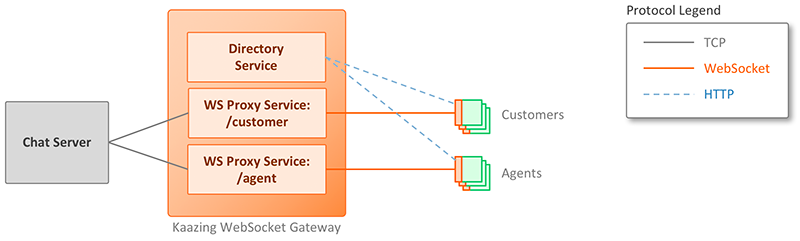
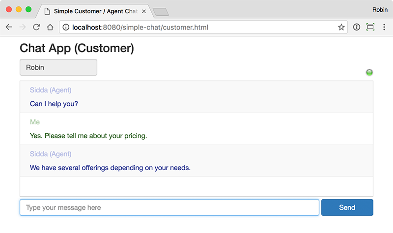
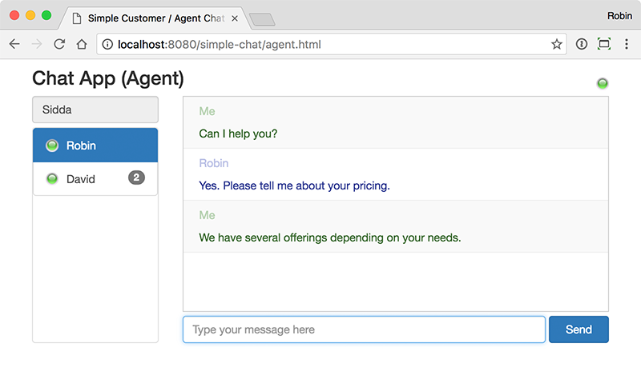

You can use this template as a starter kit for your own WebSocket application. It is an end-to-end working example that shows how a similar application may be architected.
This is a template for a simple customer-agent chat application. Customers open the chat application in their browser and chat with an agent. Agents open a different version of the chat app which lets them chat with multiple customers at the same time. The architecture looks like this:

Customers and agents use single-page browser-based JavaScript client applications. The screenshots below show a customer having a conversation with an agent, and an agent having conversations with multiple customers.
Customer application (click to enlarge):

Agent application (click to enlarge):

The chat server is a Java-based TCP socket server. It is responsible for ensuring chat messages between customers and agents are routed to the correct users. It listens for TCP connections from client and agent applications, and communicates using a custom protocol over TCP. In this example, the custom protocol is simply exchanging JSON messages.
Kaazing WebSocket Gateway (KWG) proxies the custom chat protocol between clients and the chat server. It communicates with the browser clients over the web using WebSocket, and with the chat server using TCP.
Follow these steps to start all of the components, and then run the application.
Get the files for this template.
They can be found in the Github repository https://github.com/kaazing/template-simple-chat-app.
Github provides multiple ways to obtain the files, such as:
Clone the repository. From a terminal window run the following commands:
$ git clone https://github.com/kaazing/template-simple-chat-app.git $ cd template-simple-chat-app
Download a zip of the files.
Visit the https://github.com/kaazing/template-simple-chat-app repo for other ways to obtain the files.
Start the chat server.
Open a terminal window, navigate to the run/protocol-server directory and run the following command:
$ ./run.sh
The chat server has successfully started when you see the following output:
Server started on /127.0.0.1:4445
When clients connect and send messages, log output will be written to this terminal window so you can see what is happening.
Start Kaazing WebSocket Gateway.
In a new terminal window, navigate to the run/gateway directory and run the following command:
$ ./run.sh
The gateway is ready when you see the following line:
INFO Started server successfully in 0.186 secs at 2016-11-07 10:45:56
Once it is started, the gateway is ready to receive client requests.
The gateway started in the previous step will accept WebSocket requests from the client applications. But it is also hosts the static content used by the applications.
Start the customer application using a browser to open the URL http://localhost:8080/simple-chat/customer.html
The status light on the right-hand side is green to indicate that the application has connected. If you couldn't connect, see the Troubleshooting section.
You can also look at the terminal window output for the chat server you started back in
[/127.0.0.1:65153] New connection
The prefix data in the square brackets lets you identify the client by their IP address and ephemeral port number.
Back in the browser, type the name "Robin" in the Username field and press Enter.
This causes a message to be sent to the chat server via Kaazing WebSocket Gateway (KWG) with the credentials. In this template, there is no password, so the only credentials are the username. A future template will cover security separately.
Look at the terminal output for the chat server:
[/127.0.0.1:65153] Processing full message: [{"type":"credentials","username":"Robin","role":"customer"}] (59 bytes)
[/127.0.0.1:65153] Message type: credentials
[/127.0.0.1:65153-Robin] User[address=/127.0.0.1:65153,username=Robin,role=customer]
The first line shows that a message was received. Note that it's in JSON format.
The second line shows that the message has been parsed and is of type credentials.
The third line shows the information about the user that was extracted from the message: their username and role. In this template there is no validation that this user is of that role. A future template will demonstrate how to add security so that the username and role can be validated in a trusted way.
Once the chat server has the credentials, the log line prefix will include the username for easier readability: [/127.0.0.1:65153-Robin]
The message field is greyed out because there are currently no agents connected, so there is noone who can receive messages. Let's add an agent so the customer and agent can exchange messages.
Open a new browser tab and this time start the agent application: http://localhost:8080/simple-chat/agent.html
Arrange your windows so you can see both browsers at the same time:
Type the name "Sidda" in the Username field and press Enter to login. As you do so, notice that the message field in Robin's window becomes enabled.
Here is the console output from the chat server:
[/127.0.0.1:53619] Processing full message: [{"type":"credentials","username":"Sidda","role":"agent"}] (56 bytes)
[/127.0.0.1:53619] Message type: credentials
[/127.0.0.1:53619-Sidda] User[address=/127.0.0.1:53619,username=Sidda,role=agent]
[/127.0.0.1:53619-Sidda] Notifying Sidda (agent) that Robin (customer) is present
[/127.0.0.1:65153-Robin] Notifying Robin that there are agents are present
The chat server received the credentials message from Sidda and processed in lines 1-3. Then the chat server sends two more messages. The first one, on line 4, is to notify the agent Sidda the customer Robin is present. The second on line 5 is to notify the customer Robin than an agent is now available.
If you look at the developer console in Robin's browser, you will see the JSON message received from the chat server:
{"type":"AgentsPresent"}
When the customer app received that message, it enables the message field.
In Robin's browser type a message like "Hello" and press Enter. You will see the message appear in Sidda's window.
Here is the console log from the chat server:
[/127.0.0.1:65153-Robin] Processing full message: [{"type":"message","messageText":"Hello"}] (40 bytes)
[/127.0.0.1:65153-Robin] Message type: message
[/127.0.0.1:65153-Robin] messageText=Hello
[/127.0.0.1:53619-Sidda] Sending message to Sidda
[/127.0.0.1:53619-Sidda] message={"type":"customerMessage","sender":"Robin","messageText":"Hello"} len=0065
The output shows that Robin sent a message. It was parsed by the server of type message, and then sent to Sidda.
In Sidda's browser type a response like "Can I help you?" and press Enter. You will see the message appear in Robin's window.
Open two new browser tabs. In one, open the customer chat app (http://localhost:8080/simple-chat/customer.html), and in the other open the agent chat app (http://localhost:8080/simple-chat/agent.html).
Arrange your screen so you can see all of the windows:
In the new customer browser tab, type "Natalie" in the Username field and hit Enter to login.
Notice that Sidda's app now shows there are two customers present:
Send a message from Natalie like "Hi there". Notice that Sidda doesn't see the message since he's currently looking at Robin's conversation. But a badge appears notifying Sidda that there are unread messages from Natalie.
Send another message from Natalie like, "Can you help me?" and notice that the badge number in Sidda's window increases:
In Sidda's window, click on Natalie's username to see her messages.
In this simple customer-agent chat application, an agent can converse with multiple customers at the same time
In the other agent application, login by typing "Dan" in the Username field and hitting Enter.
The chat server sends messages to Dan to let him know that customers are already present:
[/127.0.0.1:53621-Dan] Notifying Dan (agent) that Natalie (customer) is present [/127.0.0.1:53621-Dan] Notifying Dan (agent) that Robin (customer) is present
In Dan's app, you can see the two customers Natalie and Robin. In this simple application, previous messages are not stored, so Dan won't see the history of the conversation. But from now on, both Sidda and Dan can see both conversations, and participate.
Take a few moments to send messages from the various users and play around with the interface. Notice that the agents Sidda and Dan can see all of the messages, so they are aware what other agents are saying.
In Robin's window, click the green status light icon on the right-hand side. This opens the connection dialog:
Click the Disconnect button to disconnect. Robin's status light turns red to who he is disconnected.
In addition, the status light for Robin in the agent applications turns red to show his connection status:
The console output from the chat server shows that the agents were notified when Robin disconnected:
[/127.0.0.1:65153-Robin] Remote end closed the connection [/127.0.0.1:53619-Sidda] Notifying Sidda (agent) that Robin (customer) disconnected [/127.0.0.1:53621-Dan] Notifying Dan (agent) that Robin (customer) disconnected
The console log in the browser shows the JSON message received by the app:
{"type":"disconnected","username":"Robin"}
Also note that if the agents Sidda or Dan click on Robin in their app, the message field is disabled and they can't send any messages to Robin.
(Note that as well pressing the Disconnect button, you can also simply close the browser tab to disconnect.)
In Robin's window, click the Connect button.
Robin's status light turns green, as does the status lights in Sidda and Dan's windows. The users can now exchange messages again.
The chat server output shows the sequence of messages:
[/127.0.0.1:64442] New connection
[/127.0.0.1:64442] Processing full message: [{"type":"credentials","username":"Robin","role":"customer"}] (59 bytes)
[/127.0.0.1:64442] Message type: credentials
[/127.0.0.1:64442-Robin] User[address=/127.0.0.1:64442,username=Robin,role=customer]
[/127.0.0.1:64442-Robin] Notifying Robin that there are agents are present
[/127.0.0.1:53619-Sidda] Notifying Sidda (agent) that Robin (customer) is present
[/127.0.0.1:53621-Dan] Notifying Dan (agent) that Robin (customer) is present
You have now successfully run the application. Continue reading to learn more about how the application works.
This section describes the protocol used by the application.
With Kaazing WebSocket Gateway you can do any standard or custom protocol over WebSocket, including text and binary protocols. In this template, the server and clients exchange JSON messages. In addition, there is a length prefix with every message so the recipient knows how many bytes to expect.
Here is an example message:
0059{"type":"credentials","username":"Robin","role":"customer"}
The first four characters are the length prefix and specify how many subsequent bytes to read until the end of the message. In this version, only single-byte characters are valid. That's because the protocol server is a simple implementation that doesn't deal with multi-byte characters.
The JSON messages have a type key which specifies which kind of message this is. Then it optionally contains additional keys associated with that message type.
Here are some example messages sent from the client towards the server.
A customer has started the app:
0059{"type":"credentials","username":"Robin","role":"customer"}
An agent has started the app:
0056{"type":"credentials","username":"Sidda","role":"agent"}
A customer sent a message. No user information is needed because the backend server knows which connection it is from:
0059{"type":"message","messageText":"I need some information."}
An agent sent a message. The intended recipient is specified:
0063{"type":"message","messageText":"Can I help you?","to":"Robin"}
Here are some example messages sent from the server towards the client.
Notify customers that an agent is now available, and that customers can now send chat messages:
0024{"type":"AgentsPresent"}
Notify an agent that a customer is connected and can be communicated with:
0057{"type":"connected","username":"Robin","role":"customer"}
The message agents get when a customer sends a chat. It specifies who sent the message:
0084{"type":"customerMessage","sender":"Robin","messageText":"I need some information."}
The message the customer and other agents get when an agent sends a chat. It specifies who sent the message, and who the intended recipient is:
0085{"type":"agentMessage","sender":"Sidda","to":"Robin","messageText":"Can I help you?"}
Notify agents that a customer has disconnected:
0042{"type":"disconnected","username":"Robin"}
Notify customers that there are no agents currently present:
0026{"type":"NoAgentsPresent"}
This section describes the directories in the template.
| Directory | Description |
|---|---|
ee-gateway |
This directory contains Kaazing WebSocket Gateway Enterprise Edition. It is supplied here for convenience, and is the same product you would get if you downloaded it from kaazing.com. You do not need to do anything in this directory. The gateway configuration and start script is kept separate in the |
gulp |
Gulp is used to validate the client application for HTML and JavaScript correctness. This can be used by anyone modifying the client applications. It requires that you have Node.js and gulp installed. Generally you can ignore this directory. But if you would like to ensure you have no HTML or JavaScript errors in the client application, go into the $ gulp build |
instructions |
Contains these instructions. |
protocol-server |
This folder contains the source code for the backend chat server, written in Java. For convencience, it is structured as a Maven project for easy compilation, assembly, or importing into a Java IDE. You do not need to do anything in this directory. It has been pre-built and can be run from the However if you would like to modify the source code of the chat server, then do so in this directory. To compile and build it, open a terminal window in this directory and run: $ mvn clean install Then run the jar file in the $ java -jar target/protocol-server-1.1-SNAPSHOT.jar |
run/gateway |
The configuration and start script for Kaazing WebSocket Gateway can be found here. This will start the gateway found in the top-level |
run/protocol-server |
Contains a compiled runtime jar version of the backend chat server, and a start script to launch it. |
simple-chat-app |
This is the source code of the client-side customer and agent applications. When you start the gateway from the |
The protocol in this template only supports single-byte characters.
The default connect URLs for this template are ws://localhost:8080/customer and ws://localhost:8080/agent. If these URLs don't work for some reason – another process is already using port 8080, for example – then you can update the gateway configuration file in un/gateway/conf/simple-chat-gateway-config.xml.
After restarting the gateway, click the red status light in the client application to open the connect dialog:
Press Disconnect, change the URL to match your gateway configuration, then press Connect.
You can also permanently change the client URL by editing simple-chat-app/customer.html and simple-chat-app/agent.html.